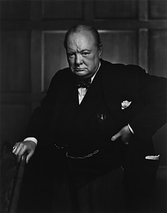

From Wikipedia, the free encyclopedia
"Churchill" redirects here. For other uses, see Churchill (disambiguation) and Winston Churchill (disambiguation).
Sir Winston Leonard Spencer Churchill
,
(30 November 1874 – 24 January 1965) was a British statesman
who served as
Prime Minister of the United Kingdom
from 1940 to 1945,
during the
Second World War
, and again from 1951 to 1955.
Best known for his wartime leadership as Prime Minister, Churchill was also a Sandhurst-educated soldier,
a
Boer War
hero, a
Nobel Prize
-winning writer and historian, a prolific painter, and one of the longest-serving politicians in British history.
Apart from two years between 1922 and 1924, he was a
Member of Parliament
(MP) from 1900 to 1964 and represented a total of five constituencies.
Ideologically an
economic liberal
and
imperialist
, he was for most of his career a member of the
Conservative Party
, which he led from 1940 to 1955.
He was a member of the Liberal Party from 1904 to 1924.